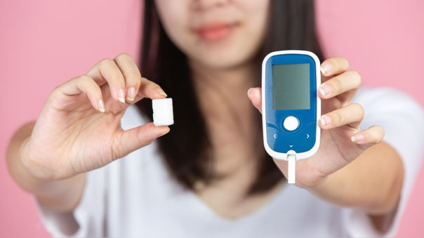
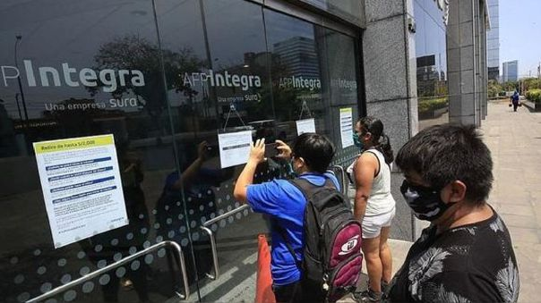

Noticias del dia 8 de Julio del 2022

Amenaza con chicotes a la prensa libre, por Fernando Carvallo [COLUMNA]
Hay que decirlo con la mayor claridad: ni las rondas campesinas ni ninguna otra organización social tienen derecho a imponer su verdad y menos a forzar a nadie a difundir bajo amenaza una versión favorable al poder.
Aprender Mas
Cuenta de Disneyland en Instagram fue hackeada para publicar mensajes ofensivos
El Instagram de Disneyland, Anaheim fue víctima de un ciberataque de un hacker llamado David Do, quien publicó ofensas racistas junto a selfies de él mismo
Aprender Mas
¿Qué significó realmente ser punk?
A diferencia del rock progresivo y del glam que lo precedieron, el punk era antisistema, antirreglamentario y anticomercial.
Aprender Mas

Insulina y leptina, el tira y afloja de lo que comemos
El azúcar procedente de la dieta (la glucosa) es la fuente principal de energía del ser humano. Esta glucosa es la encargada de mover nuestros músculos, hacer funcionar nuestros órganos y, sobre todo, alimentar a nuestro cerebro.
Aprender Mas
Rusia: el Kremlin niega usar el petróleo y el gas como un arma de presión política tras desabastecimiento
Dimitri Peskov, portavoz de la presidencia rusa, señaló que la detención del gasoducto Nord Stream en su país se debe a que los motores están retenidos en Canadá y por eso no pueden proveer de manera habitual
Aprender Mas

Retiro AFP: ¿Quiénes pueden solicitar su dinero hoy?
Los afiliados a las AFP ya están autorizados para realizar el sexto retiro de fondos, pero ¿sabes cuándo puedes solicitar el dinero de tu cuenta?
Aprender Mas